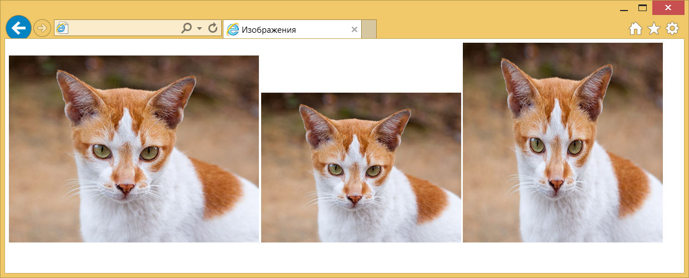
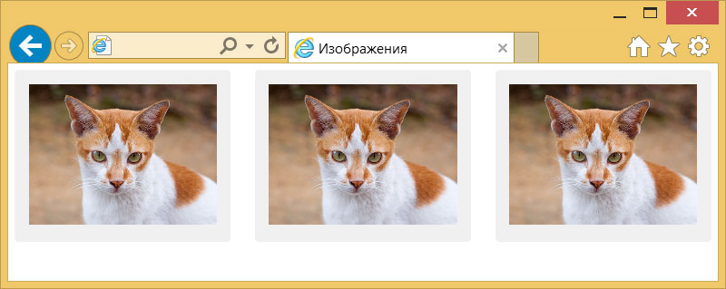
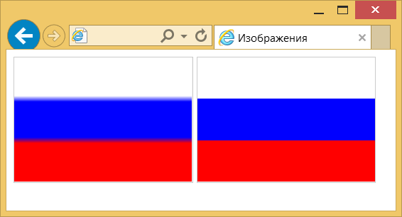
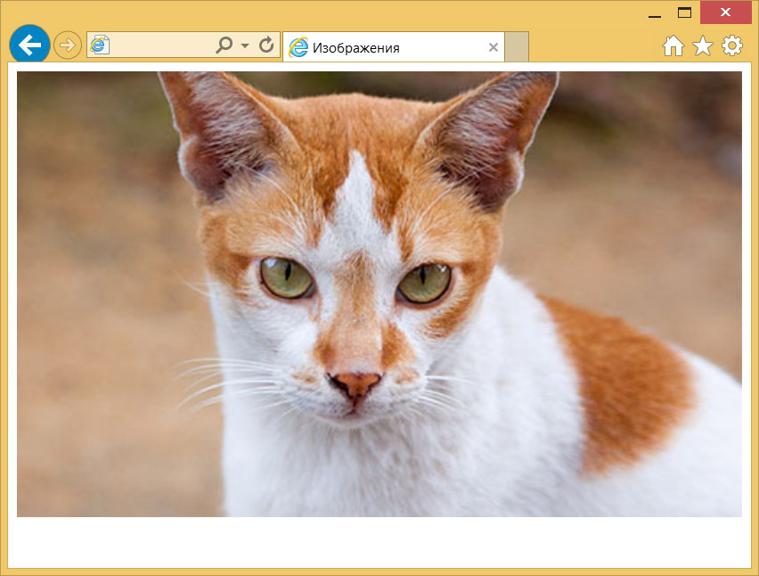

Масштабирование картинок
Если для элемента <img> не задать атрибуты width и height, то браузер самостоятельно определит ширину и высоту изображения после загрузки файла и покажет его в исходном размере. Рисунок в формате SVG браузеры, за исключением IE, выводят на всю доступную ширину.
Изменение масштаба и пропорций изображения делается как через атрибуты <img>, так и через стили.
Использование атрибутов
Любую картинку можно как увеличивать, так и уменьшать в размерах, задавая значение высоты или ширины в пикселях или процентах от размера родителя. Если установлена только ширина или высота, то вторая величина вычисляется автоматически исходя из пропорций картинки. Два заданных значения могут исказить пропорции, особенно если они заданы неверно. В примере 1 показаны разные варианты задания размеров в пикселях.
Пример 1. Размеры в пикселях
<!DOCTYPE html>
<html>
<head>
<meta charset="utf-8">
<title>Изображения</title>
</head>
<body>
<img src="image/redcat.jpg" alt="Размеры не заданы">
<img src="image/redcat.jpg" alt="Задана ширина" width="400">
<img src="image/redcat.jpg" alt="Задана ширина и высота" width="400" height="400">
</body>
</html>В примере использовалась одна и та же фотография, для первого <img> размеры явно не указаны, поэтому браузер добавил изображение в исходном виде. Для второй фотографии указана ширина 400 пикселей, что привело к уменьшению её размеров при сохранении пропорций. Третья фотография искажена, поскольку задана одинаковая ширина и высота, притом, что исходное изображение не квадратное (рис. 1).

Рис. 1. Размеры фотографии
Аналогичным образом задаются размеры в процентах от ширины родительского элемента, таким образом можно установить картинку на всю ширину окна браузера. В примере 2 показано добавление трёх фотографий в ряд, ширина которых привязана к ширине окна.
Пример 2. Размеры в процентах
<!DOCTYPE html>
<html>
<head>
<meta charset="utf-8">
<title>Изображения</title>
<style>
figure {
width: 27%; /* Ширина */
float: left; /* Выстраиваем элементы по горизонтали */
margin: 0 0 0 3.5%; /* Отступ слева */
background: #f0f0f0; /* Цвет фона */
border-radius: 5px; /* Радиус скругления */
padding: 2%; /* Поля */
}
figure:first-child {
margin-left: 0; /* Убираем отступ для первого элемента */
}
</style>
</head>
<body>
<figure>
<img src="image/redcat.jpg" alt="Рыжая кошка" width="100%">
</figure>
<figure>
<img src="image/redcat.jpg" alt="Рыжая кошка" width="100%">
</figure>
<figure>
<img src="image/redcat.jpg" alt="Рыжая кошка" width="100%">
</figure>
</body>
</html>В данном примере все размеры заданы в процентах, так что приходится пользоваться математикой, чтобы суммарная ширина не получилась больше 100%. Ширину каждого элемента <figure> устанавливаем как 27%, к ней добавляется поле слева и справа по 2%, итого каждый элемент занимает 31%, а всего 31х3=93%. Оставшиеся 100-93=7% делим пополам, в итоге 7/2=3.5% — столько получается ширина промежутка между блоками. Для первого <figure> отступ слева нам не нужен, поэтому его убираем через свойство margin-left. Результат данного примера показан на рис. 2.

Рис. 2. Масштабирование фотографий
Масштабирование через стили
Стили удобно задействовать, когда нужно массово задать одинаковые размеры для множества изображений, тогда не придётся указывать индивидуальные размеры для каждой картинки через width и height. Но если у вас большое количество иллюстраций разного размера, то стили здесь никак не помогут. Они пригодятся, например, для иконок одинаковой ширины и высоты или когда размеры задаются в процентах, как это показано выше. В примере 3 приведён стиль для изменения размеров всех изображений внутри элемента <figure>.
Пример 3. Размеры через стили
figure img {
width: 100%; /* Ширина в процентах */
}Когда для одного элемента одновременно указывается атрибут width и стилевое свойство width, то стили имеют приоритет выше.
Интерполяция
Предположим, что у нас есть растровая картинка размером 200х200 пикселей и мы увеличиваем её пропорционально по ширине в два раза. Площадь изображения и общее количество пикселей вырастет при этом в четыре раза. Новые пиксели добавляются браузером самостоятельно исходя из набора уже имеющихся. Способ получения этих новых пикселей называется интерполяцией изображения. Надо понимать, что качество очень сильно зависит от самого изображения, масштаба и алгоритма, но обычно результат получается хуже оригинала.
Похожее происходит и при уменьшении изображения, только браузеру уже приходится не добавлять, а выбрасывать часть пикселей.
Алгоритм интерполяции заложен в браузер и может быть изменён с помощью свойства image-rendering. К сожалению, браузеры пока слабо поддерживают это свойство, поэтому приходится указывать несколько разных значений. В примере 4 показано изменение алгоритма, чтобы переходы цветов не размывались, а оставались чёткими. В браузерах Chrome и Opera пример пока не работает, ожидается что поддержка свойства появится в новых версиях.
Пример 4. Изменение алгоритма интерполяции
<!DOCTYPE html>
<html>
<head>
<meta charset="utf-8">
<title>Изображения</title>
<style>
img { border: 1px solid #ccc; }
.edge {
image-rendering: -moz-crisp-edges; /* Firefox */
-ms-interpolation-mode: nearest-neighbor; /* IE */
image-rendering: crisp-edges; /* Стандартное свойство */
}
</style>
</head>
<body>
<img src="image/russia.png" alt="Флаг России" width="200">
<img src="image/russia.png" alt="Флаг России" width="200" class="edge">
</body>
</html>Результат данного примера показан на рис. 3. Для левой картинки применяется алгоритм, заданный по умолчанию; для правой — метод интерполяции по ближайшим точкам.

Рис. 3. Вид картинок после увеличения масштаба
Вписывание картинки в область
Порой изображения необходимо вписать в область заданных размеров, например, для создания слайдшоу — плавной смены нескольких фотографий. Есть два основных способа. Первый метод простой и работает во всех браузерах. Задаём желаемые размеры области и скрываем всё, что в неё не помещается с помощью свойства overflow со значением hidden (пример 5).
Пример 5. Использование overflow
<!DOCTYPE html>
<html>
<head>
<meta charset="utf-8">
<title>Изображения</title>
<style>
figure {
width: 100%; /* Ширина области */
height: 400px; /* Высота области */
margin: 0; /* Обнуляем отступы */
overflow: hidden; /* Прячем всё за пределами */
min-width: 600px; /* Минимальная ширина */
}
figure img {
width: 100%; /* Ширина изображений */
margin: -10% 0 0 0; /* Сдвигаем вверх */
}
</style>
</head>
<body>
<figure>
<img src="image/redcat.jpg" alt="Рыжая кошка">
</figure>
</body>
</html>Результат примера показан на рис. 4. Область имеет высоту 400 пикселей и занимает всю доступную ей ширину. Для фотографии внутри <figure> устанавливаем ширину 100% и сдвигаем её чуть вверх, чтобы она лучше выглядела. Поскольку высота области фиксирована, то при уменьшении окна браузера до некоторого предела высота фотографии окажется меньше 400 пикселей и под ней появится пустое пространство. Поэтому вводим свойство min-width чтобы этого избежать.

Рис. 4. Фотография внутри области заданных размеров
Второй способ не так универсален, поскольку свойство object-fit не поддерживается в IE, а Firefox его понимает только с версии 36. Зато object-fit позволяет более аккуратно вписать изображение в заданную область. В примере 6 показан стиль для этого. Задействовано значение cover, оно увеличивает или уменьшает изображение так, чтобы оно всегда полностью заполняла всю область.
Пример 6. Использование object-fit
figure {
width: 100%; /* Ширина области */
height: 400px; /* Высота области */
margin: 0; /* Обнуляем отступы */
}
figure img {
width: 100%; /* Ширина изображений */
height: 100%; /* Высота изображении */
object-fit: cover; /* Вписываем фотографию в область */
}